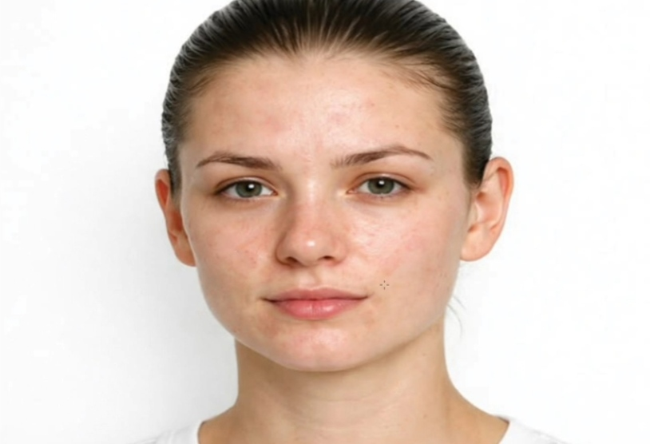

About This Lesson
Combine text, shapes, and images to create a clean graphic composition. The steps below use common Photoshop tools and panels; labels may vary slightly by version.

Learning Objectives
At the end of the activity, learners should be able to:
- Identify and use the Spot Healing Brush and Healing Brush tools in Adobe Photoshop.
- Edit a portrait image by removing small blemishes and improving its appearance.
- Apply proper editing techniques to produce a clean and natural-looking image.
Step-by-Step Instructions
-
Step 1
Open Adobe Photoshop
-
Step 2
Import the Portrait Image
-
Step 3
Zoom In on the Face
-
Step 4
Duplicate the Image Layer
-
Step 5
Duplicate the Image Layer
-
Step 6
Remove Small Blemishes
-
Step 7
Use the Healing Brush Tool
-
Step 8
Use the Healing Brush Tool
-
Step 9
Use the Healing Brush Tool
-
Step 10
Save the Edited Image
Video 1
Practical Activity
Remove unwanted spots or blemishes from a photograph using the bursh tool.